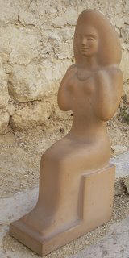
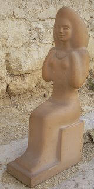

Vous trouverez ici une série d’anecdotes imprégnées de l’atmosphère qui régnait à Vallauris dans les années 1950 - 1960. Ces histoires m’ont été racontées par mes parents, ou je les ai vécues moi même. Toute remarque ou complément seront les bienvenus...

La fabrique dans les années 1940.On remarquera, à droite, le bois destiné au four. Le four à bois, sur la gauche de la photo, est celui de la poterie Milazzo (de l'autre côté de l'avenue Clémenceau) . Au fond, le premier magasin. Un nouveau magasin sera construit à l' emplacement des trois grosses jarres sur la gauche, au milieu des années 1950.
L'Assiette et Picasso
Ma mère racontait que c' est en voyant cette assiette de mon père en vente dans un magasin de Golfe Juan que Picasso voulut connaître Vallauris. Il demanda au vendeur qui avait fabriqué cette assiette. Lorsqu' il apprit que c' était une oeuvre d'André Baud, Picasso lui rendit visite. Il lui demanda alors un peu d'argile pour s'initier à la céramique. On était juste à la fin de la guerre et il était difficile de se procurer de l'argile. Dans un premier temps, mon père refusa, mais quand il comprit qu'il avait devant lui "Monsieur Picasso", il dit qu' il n'avait rien à refuser à un aussi grand artiste. C'est ainsi que , selon la légende, Picasso aurait fabriqué sa première œuvre en céramique dans l'usine d'André Baud. Quelques jours plus tard, Picasso rencontra les Ramié dans leur atelier Madoura où il décida de travailler.
Le service complet (cliché André Baud)
Le voyage en Hongrie

André Baud présentant une de ses oeuvres à un céramiste hongrois
En 1962, la ville de Vallauris est jumelée avec la ville hongroise de Hödmezövasarhely. Un voyage est alors organisé en Hongrie pour un bon nombre de céramistes de Vallauris. André Baud y part avec son épouse, en voiture. La Hongrie étant alors un Etat communiste, les touristes y sont "encadrés" par un "guide" et il est hors de question de voyager seul. Pourtant, mon père, sans opinion politique bien définie au départ, revint convaincu par le "communisme" de ces pays où les artistes étaient pris en charge par l'Etat, sans autre souci (pensait-il !) que celui de créer leurs œuvres. Il prit donc une part de plus en plus active à la mairie de Vallauris dirigée alors par le communiste Paul Dérigon.
Ci-contre, un article paru dans une revue intitulée "France-Hongrie" 
Le billet de 1000 francs


Voici l' histoire de ce billet telle qu' elle me fut racontée par mon père:
Un jour, un repas est organisé dans un restaurant de Cannes, réunissant autour de la table plusieurs potiers, Picasso et un riche industriel américain. Celui-ci dit alors à Picasso : "Je parie que je suis plus riche que vous !". Picasso lui répond : "Ce n' est pas vrai et je vais vous le prouver". Il se tourne alors vers mon père et lui dit: "Baud, passez-moi donc un billet de 1.000 francs". Il s'adresse ensuite à l'Américain : "Voyez-vous ce billet ? Il vaut 1.000 francs", puis il prend un stylo, le signe et lui dit : "Maintenant, il en vaut le double !!" Éclat de rire général à la table… Mon père demande alors à Picasso : "Puis-je récupérer mon billet ?". C'est ainsi que, depuis ce jour, le billet signé par Picasso se trouve en notre possession !!!!
Le noel de Grailhe
Henry Grailhe et André Baud au milieu des années soixantes
Grailhe était un grand ami de mes parents. Il vivait à Vallauris, sans famille. Il a donc passé chez nous tous les Noël entre 1959 et 1968. Mes parents l'invitaient à midi à la villa "San Michèle" où nous habitions, Chemin de la Rampe, face au Golfe. Chaque Noël, Grailhe m'offrait un livre comme cadeau. C'est ainsi qu'après avoir commencé par recevoir "Les animaux de la ferme", j'ai eu pour le dernier Noël un livre de romans de Jack London.
 

Statuette en terre cuite signée Grailhe